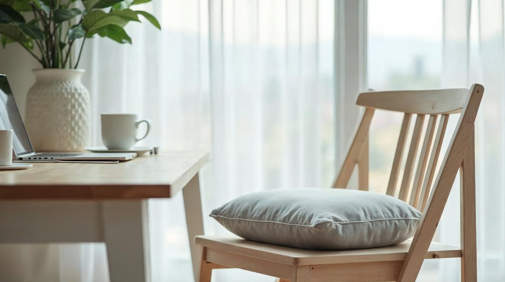
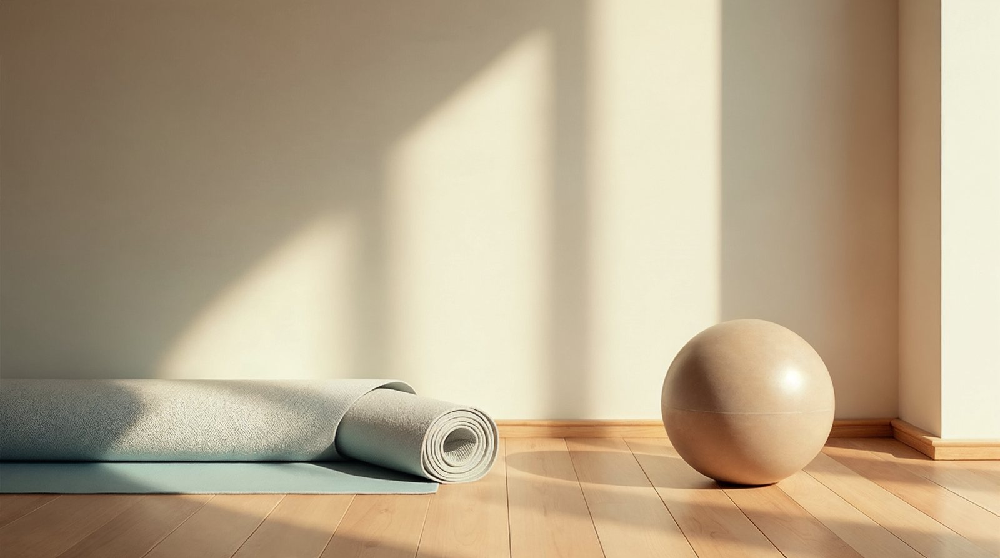
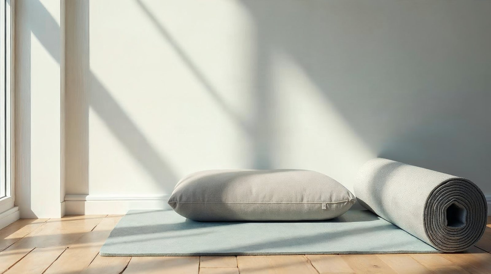
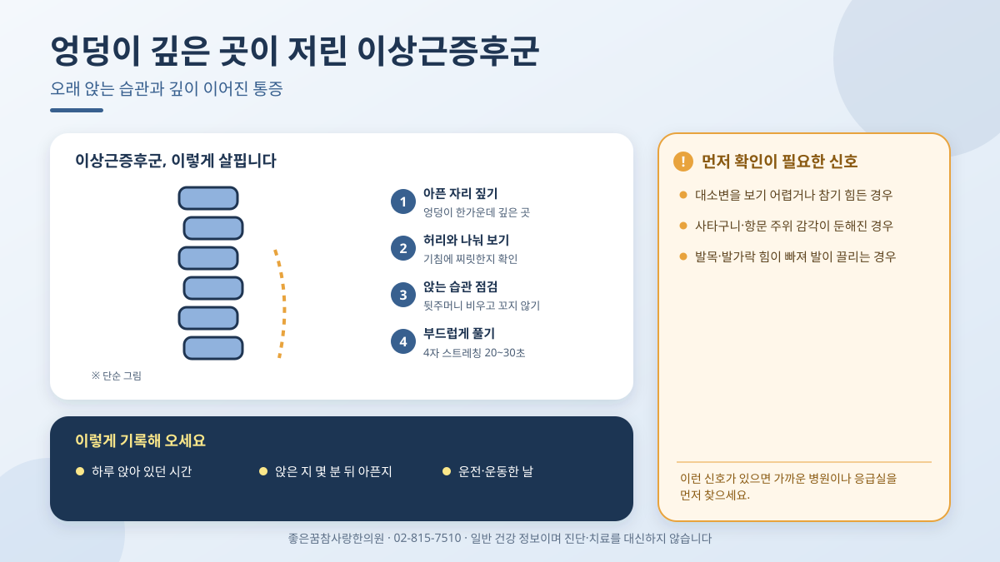

이종호 한의사 감수좋은꿈참사랑한의원 대표원장 (한의사 면허번호 19769)발행 2026-11-26 · 수정 2026-11-26
이 글의 차례
회의가 길어지던 오후, 의자에 앉아 있던 엉덩이 한쪽이 묵직하게 저려 옵니다. 다리를 꼬았다 풀었다, 엉덩이를 들썩여 봐도 깊은 곳의 뻐근함은 그대로입니다. 일어나서 몇 걸음 걸으면 조금 나아지는데, 다시 앉으면 어김없이 같은 자리가 아파 옵니다.
이런 분들이 진료실에서 가장 많이 하시는 말씀이 "허리는 별로 아프지 않은데 엉덩이가 아파요"입니다. 허리디스크인가 싶어 검사를 받았는데 큰 이상이 없다는 이야기를 들으셨다는 분도 계십니다. 이럴 때 함께 살펴보는 것이 이상근증후군입니다.
이상근은 엉덩이 깊은 곳, 엉치뼈에서 허벅지 뼈 바깥쪽으로 이어지는 작은 근육입니다. 다리를 바깥으로 돌리고 골반을 안정시키는 일을 합니다. 그런데 이 근육 바로 아래나 사이로 다리로 내려가는 굵은 좌골신경이 지나갑니다.
그래서 이상근이 오래 긴장하거나 붓고 뭉치면 바로 옆을 지나는 신경을 조이거나 자극해서, 엉덩이 깊은 통증과 함께 다리 뒤로 내려가는 저림이 생길 수 있습니다. 오늘은 이 통증이 어떻게 생기는지, 허리디스크와 무엇이 다른지, 일상에서 무엇을 바꿔 보면 좋을지 정리해 보겠습니다.

이상근증후군은 어떤 상태인가요
이상근증후군은 엉덩이 깊은 곳의 이상근이 긴장하거나 짧아지면서 주변 신경을 자극해 생기는 통증을 말합니다. 엉덩이 한가운데가 묵직하게 아프고, 허벅지 뒤로 당기거나 저린 느낌이 내려가는 것이 흔한 모습입니다.
통증은 대개 한쪽에 생기고, 오래 앉아 있을수록 심해지는 경우가 많습니다. 딱딱한 의자, 자동차 운전석, 바닥에 앉는 자리처럼 엉덩이를 오래 누르는 곳에서 특히 불편해집니다. 일어나서 걸으면 조금 풀리는 경우가 많습니다.
계단을 오를 때, 다리를 꼬고 앉을 때, 쪼그려 앉을 때처럼 이상근이 늘어나거나 힘을 쓰는 동작에서 통증이 커지기도 합니다. 반대로 허리를 숙이거나 기침을 할 때 다리로 찌릿함이 뻗치는 경우는 허리 쪽 원인을 먼저 의심합니다.
왜 엉덩이 깊은 근육이 신경을 조일까요
이상근증후군은 한 가지 이유보다는 여러 습관이 겹쳐 생기는 경우가 많습니다. 진료실에서 자주 듣는 이유는 이렇습니다.
- 하루 대부분을 앉아서 보내는 생활, 특히 딱딱하거나 푹 꺼지는 의자
- 뒷주머니에 지갑이나 휴대폰을 넣고 오래 앉는 습관
- 한쪽으로 다리를 꼬거나 한쪽 엉덩이에 체중을 싣고 앉는 습관
- 장거리 운전으로 한쪽 다리를 오래 같은 자세로 두는 일
- 달리기, 계단 오르기, 등산처럼 엉덩이 근육을 많이 쓰는 운동을 갑자기 늘린 경우
- 엉덩이를 부딪히거나 넘어져 근육이 다친 뒤
근육은 오래 눌리거나 같은 자세로 긴장하면 혈액 순환이 떨어지고 뻣뻣해집니다. 이상근처럼 깊은 곳에 있는 근육은 스스로 풀기도 어렵습니다. 그 상태가 이어지면 근육이 두꺼워지거나 짧아진 채로 굳어, 옆을 지나는 신경을 계속 자극하게 됩니다.
골반의 균형도 관련이 있습니다. 한쪽 골반이 기울거나 돌아가 있으면 한쪽 이상근이 늘 더 긴장하게 됩니다. 그래서 진료실에서는 엉덩이 근육만 보지 않고 서 있는 자세와 걷는 모습, 골반의 높이도 함께 봅니다.
허리디스크와는 어떻게 다를까요
이상근증후군과 허리디스크는 둘 다 엉덩이에서 다리 뒤로 내려가는 통증을 만들어서 헷갈리기 쉽습니다. 아래 차이를 참고로 보세요. 모든 분이 이 틀에 꼭 맞지는 않습니다.
- 아픈 중심: 이상근은 엉덩이 한가운데 깊은 곳, 디스크는 허리와 엉덩이가 함께 아픈 경우가 많음
- 허리 통증: 이상근은 허리 통증이 거의 없거나 가벼운 경우가 많음
- 기침·재채기: 디스크는 다리로 찌릿함이 뻗치는 경우가 많고, 이상근은 크게 변화가 없는 경우가 많음
- 누르는 반응: 이상근은 엉덩이 깊은 곳을 누르면 같은 통증이 재현되는 경우가 많음
- 다리 힘: 디스크는 발목이나 발가락 힘이 약해지기도 하지만, 이상근은 힘 약화가 드문 편
다만 두 가지가 함께 있는 경우도 있습니다. 허리에서 신경이 조금 예민해진 상태에서 엉덩이 근육까지 긴장하면 통증이 더 커지기도 합니다. 그래서 이상근증후군으로 보이더라도 허리 쪽을 함께 확인합니다.
다른 엉덩이 통증과의 차이
엉덩이 옆, 바지 주머니 자리가 아프고 옆으로 누우면 아프다면 중둔근이나 고관절 바깥 힘줄 쪽을 먼저 봅니다. 이상근은 그보다 안쪽, 엉덩이 한가운데 깊은 곳에 통증의 중심이 있는 경우가 많습니다.
엉치뼈 바로 옆이 콕 찌르듯 아프고 한쪽 다리로 설 때나 침대에서 돌아누울 때 아프다면 천장관절 쪽을 함께 봅니다. 앉을 때 엉덩이 맨 아래 앉는 뼈 부위가 아프다면 허벅지 뒤 힘줄이 붙는 자리의 문제일 수 있습니다.
이렇게 엉덩이 통증은 자리마다 원인이 달라서, 정확한 위치를 짚어 보는 것이 진찰의 첫걸음입니다. "엉덩이가 아파요"보다 "여기가 아파요"라고 손가락으로 짚어 주시면 훨씬 빠르게 좁혀 갈 수 있습니다.
집에서 해 볼 수 있는 간단한 확인
오시기 전에 몇 가지를 살펴 두시면 상담이 수월해집니다. 아프면 바로 멈추시고 무리하지 않는 범위에서만 해 보세요.
- 앉아 있을 때와 걸을 때 가운데 언제 더 아픈지
- 테니스공을 엉덩이 깊은 곳에 대고 벽에 기댔을 때 같은 통증이 재현되는지
- 누워서 아픈 쪽 다리를 반대쪽 무릎 위에 4자로 올릴 때 엉덩이가 당기는지
- 기침이나 재채기에 다리로 찌릿함이 뻗치는지
- 발끝과 발뒤꿈치로 걷기가 양쪽 똑같이 되는지
4자 자세에서 엉덩이 깊은 곳이 당기고 기침에는 크게 변화가 없다면 이상근 쪽에 가까울 수 있고, 기침에 다리가 찌릿하거나 발 힘이 약하다면 허리 쪽 확인이 먼저입니다.
이상근증후군을 두고 자주 헷갈리는 것
첫째, 엉덩이가 아프니 엉덩이만 세게 누르면 풀린다는 생각입니다. 이상근 옆에는 신경이 지나가서, 너무 세게 오래 누르면 오히려 신경이 더 예민해질 수 있습니다. 공으로 풀 때도 시원한 정도에서 짧게 하시는 것이 좋습니다.
둘째, 스트레칭을 많이 할수록 좋다는 생각입니다. 이미 예민해진 근육과 신경을 억지로 늘리면 다음 날 더 저린 경우가 있습니다. 통증이 다리로 퍼지지 않는 범위에서 짧게 여러 번 하시는 쪽을 권합니다.
셋째, 검사에서 이상이 없으니 아픈 게 아니라는 생각입니다. 근육의 긴장은 영상에 잘 드러나지 않는 경우가 많습니다. 검사가 깨끗하다는 것은 큰 구조적 문제가 없다는 뜻이지, 통증이 없다는 뜻은 아닙니다.
먼저 이렇게 여쭙니다
처음 오시면 저는 대략 이런 순서로 여쭙니다. 떠오르는 대로 말씀해 주시면 됩니다.
- 엉덩이 어디가 가장 아픈가요? 손가락으로 짚어 보실 수 있나요?
- 하루에 몇 시간 정도 앉아 계신가요? 어떤 의자에 앉으시나요?
- 통증이 다리 어디까지 내려가나요?
- 운전이나 운동, 계단 오르기를 최근에 늘리신 적이 있나요?
- 지갑을 뒷주머니에 넣거나 다리를 꼬는 습관이 있나요?
- 병원 검사를 받으셨거나 드시는 약이 있나요?
허리와 다리 통증 진료 때는 대소변 변화가 없는지도 모든 분께 여쭙습니다. 허리 아래 신경과 관련된 중요한 확인이니 편하게 말씀해 주세요.
일상에서 먼저 해 볼 수 있는 것
이상근증후군은 앉는 습관과 깊이 이어져 있어서, 생활 속 작은 조정이 큰 차이를 만드는 경우가 많습니다.
- 뒷주머니는 비우고 앉기
- 30~40분마다 일어나 1~2분 걷기
- 다리를 꼬지 않고 두 발을 바닥에 평평하게 두기
- 딱딱한 의자에는 얇은 방석을, 푹 꺼지는 소파는 피하기
- 운전할 때는 한 시간마다 쉬어 가며 엉덩이 근육 풀어 주기
- 아픈 쪽으로 오래 눕지 않기
누워서 하는 4자 스트레칭은 많은 분이 편하게 하실 수 있는 동작입니다. 바로 누워 아픈 쪽 발목을 반대쪽 무릎 위에 올리고, 반대쪽 허벅지를 가슴 쪽으로 천천히 당깁니다. 엉덩이가 기분 좋게 당기는 정도에서 20~30초 머무르고, 다리로 저림이 퍼지면 멈춥니다.
따뜻한 찜질도 굳은 엉덩이 근육을 풀어 주는 데 도움이 될 수 있습니다. 샤워나 반신욕 뒤 근육이 따뜻할 때 스트레칭을 하면 한결 부드럽게 늘어나는 것을 느끼실 수 있습니다.
운동을 하신다면 갑자기 양을 늘리지 않는 것이 중요합니다. 달리기나 등산을 다시 시작할 때는 평소의 절반 정도에서 시작해 몸의 반응을 보며 늘려 가세요. 엉덩이 옆 근육을 함께 단련하면 골반이 안정되어 이상근의 부담이 줄어듭니다.

생활 모습에 따라 달라지는 관리
사무실에서 하루 종일 앉아 일하시는 분은 의자와 책상 높이, 일어나는 간격이 관리의 중심이 됩니다. 알람을 맞춰 두고 물을 마시러 가거나 화장실에 다녀오는 것처럼 일어날 핑계를 일과 속에 넣어 두시면 오래 이어 가기 쉽습니다.
운전을 오래 하시는 분은 좌석 깊이와 페달 거리를 다시 맞춰 보세요. 페달이 멀어 엉덩이를 앞으로 빼고 앉으면 골반이 뒤로 기울어 엉덩이 근육이 더 긴장합니다. 휴게소에 들를 때마다 차 옆에서 엉덩이를 가볍게 늘려 주는 것도 좋습니다.
달리기나 등산을 즐기시는 분은 운동량을 늘린 시기와 통증이 시작된 시기가 겹치는지 살펴봅니다. 운동 전후로 엉덩이 근육을 충분히 풀고, 오르막과 계단이 많은 코스는 통증이 가라앉을 때까지 잠시 줄여 보시길 권합니다.
한의원에서 함께 살필 수 있는 경우
- 오래 앉으면 엉덩이 깊은 곳이 뻐근하고 다리가 저린 경우
- 허리 검사에서 큰 이상이 없다는데 엉덩이와 다리 당김이 이어지는 경우
- 운전이나 앉아서 하는 일 때문에 엉덩이 통증이 되풀이되는 경우
- 골반이 한쪽으로 기운 느낌과 함께 엉덩이가 아픈 경우
- 통증 때문에 잠을 설치거나 앉아서 일하기 힘든 경우
좋은꿈참사랑한의원에서는 먼저 아래의 '먼저 확인이 필요한' 신호가 없는지부터 봅니다. 그다음 맥을 짚고, 엉덩이 근육의 긴장과 누르는 자리의 반응, 골반과 허리의 움직임, 걷는 모습을 함께 확인합니다.
진찰한 내용에 따라 침 치료, 골반과 허리의 움직임을 보고 세기를 고르는 추나, 필요한 경우 초음파로 깊은 근육의 위치를 확인하며 놓는 약침 가운데 지금 상태에 맞는 것을 정합니다. 근막 통증이 오래 이어지는 경우에는 체외충격파를 상의하기도 합니다. 한약을 상의할 때는 드시는 약을 확인한 뒤 신중하게 정합니다.
병원에서 처방받은 약은 상의 없이 멈추지 마세요. 다리 힘이 약해지거나 저림 범위가 넓어지면 정형외과나 신경외과 확인을 함께 받아 보시도록 안내합니다.

이렇게 기록해 오시면 상담이 쉬워집니다
엉덩이 통증은 앉는 시간과 자세에 따라 크게 달라져서, 며칠간의 기록이 판단에 큰 도움이 됩니다.
- 하루 동안 앉아 있던 시간과 의자 종류
- 통증이 시작된 시점(앉은 지 몇 분 뒤인지)
- 통증이 내려간 범위(엉덩이, 허벅지, 종아리)
- 운전 시간이나 운동한 날
- 스트레칭이나 찜질을 한 뒤의 변화
특히 '앉은 지 몇 분 뒤에 아파지는지'를 적어 보세요. 이 시간이 조금씩 늘어난다면 좋아지는 흐름으로 볼 수 있고, 일상에서 일어날 간격을 정하는 기준도 됩니다.
앉는 시간을 다시 설계하며
엉덩이 깊은 곳의 통증은 오래 앉아 지내 온 생활이 몸에 남긴 흔적이기도 합니다. 하루아침에 생기지 않았듯, 풀리는 데도 시간이 걸립니다. 조급해하기보다 앉는 시간을 조금씩 다시 짜는 마음으로 지내 보세요. 몸은 생각보다 작은 변화에도 반응합니다.
이번 주에는 뒷주머니를 비우고, 40분마다 일어나는 것 두 가지만 해 보세요. 다음에 오시면 앉은 시간과 통증의 기록을 함께 보며 그다음을 정하겠습니다.
이런 증상은 먼저 확인이 필요합니다
- 대소변을 보기 어렵거나 참기 힘들고, 사타구니와 항문 주위 감각이 둔해진 경우
- 발목이나 발가락에 힘이 빠져 발이 끌리고 그 정도가 빠르게 심해지는 경우
이런 신호가 있으면 한의원보다 가까운 병원이나 응급실을 먼저 찾으세요.
함께 읽으면 좋은 글
- 엉덩이 옆이 뻐근하고 옆으로 누우면 아픈 중둔근 통증은 어떻게 살피나요?
- 허리 아래 엉치 한쪽이 콕 찌르듯 아픈 천장관절 통증은 어떻게 살피나요?
- 의자에 앉으면 엉덩이 아래 앉는 뼈 부위가 아플 때 체외충격파는 어떻게 살피나요?
- 허리 디스크 초기 신호와 다리 저림은 어떻게 구분하나요?
- 오래 앉아 공부하거나 일할 때 허리와 골반은 얼마 간격으로 쉬어 주나요?

여쭙는 것
- 엉덩이 어디가 가장 아픈가요? 손가락으로 짚어 보실 수 있나요?
- 하루에 몇 시간 정도 앉아 계신가요? 어떤 의자에 앉으시나요?
- 통증이 다리 어디까지 내려가나요?
생활에서 해 볼 것
- 뒷주머니는 비우고 앉기
- 30~40분마다 일어나 1~2분 걷기
- 다리를 꼬지 않고 두 발을 바닥에 평평하게 두기
한의원에서 함께 살필 것
- 오래 앉으면 엉덩이 깊은 곳이 뻐근하고 다리가 저린 경우
- 허리 검사에서 큰 이상이 없다는데 엉덩이와 다리 당김이 이어지는 경우
- 운전이나 앉아서 하는 일 때문에 엉덩이 통증이 되풀이되는 경우
먼저 확인이 필요한 신호
- 대소변을 보기 어렵거나 참기 힘들고, 사타구니와 항문 주위 감각이 둔해진 경우
- 발목이나 발가락에 힘이 빠져 발이 끌리고 그 정도가 빠르게 심해지는 경우
한눈에 보는 표
| 구분 | 핵심 |
|---|---|
| 여쭙는 것 | 엉덩이 어디가 가장 아픈가요? 손가락으로 짚어 보실 수 있나요? 하루에 몇 시간 정도 앉아 계신가요? 어떤 의자에 앉으시나요? |
| 생활에서 해 볼 것 | 뒷주머니는 비우고 앉기 30~40분마다 일어나 1~2분 걷기 |
| 한의원에서 함께 살필 것 | 오래 앉으면 엉덩이 깊은 곳이 뻐근하고 다리가 저린 경우 허리 검사에서 큰 이상이 없다는데 엉덩이와 다리 당김이 이어지는 경우 |
| 먼저 확인이 필요한 신호 | 대소변을 보기 어렵거나 참기 힘들고, 사타구니와 항문 주위 감각이 둔해진 경우 발목이나 발가락에 힘이 빠져 발이 끌리고 그 정도가 빠르게 심해지는 경우 |
자주 묻는 질문
이상근증후군은 허리디스크와 함께 있을 수도 있나요?
네, 함께 있는 경우도 있습니다. 허리에서 신경이 조금 예민해진 상태에서 엉덩이 근육까지 긴장하면 통증이 더 커지기도 합니다. 그래서 엉덩이 근육과 허리를 함께 살핍니다.
테니스공으로 엉덩이를 풀어도 되나요?
시원한 정도로 짧게 하시는 것은 괜찮습니다. 다만 너무 세게 오래 누르면 옆을 지나는 신경이 더 예민해질 수 있어서, 다리로 저림이 퍼지면 멈추시는 것이 좋습니다.
앉아서 일해야 하는데 어떻게 하면 좋을까요?
뒷주머니를 비우고, 두 발을 바닥에 평평하게 두고, 30~40분마다 일어나 잠깐 걷는 것부터 시작해 보세요. 의자 높이와 방석도 함께 살펴보면 도움이 됩니다.
검사에서 이상이 없다는데 왜 계속 아픈가요?
근육의 긴장은 영상에 잘 드러나지 않는 경우가 많습니다. 검사가 깨끗하다는 것은 큰 구조적 문제가 없다는 뜻으로 보시고, 엉덩이 근육과 앉는 습관을 함께 살펴보시길 권합니다.
운동은 쉬어야 하나요?
통증을 키우는 운동은 잠시 줄이되, 걷기처럼 부드러운 움직임은 이어 가시는 편이 좋습니다. 다시 늘릴 때는 평소의 절반 정도에서 시작해 몸의 반응을 보며 늘려 가세요.
좋은꿈참사랑한의원은 재진 때 지난번 이야기부터 이어서 여쭙니다. 진료시간과 예약은 오시는 길에서 확인하세요.
어디서 상담받을 수 있나요?
좋은꿈참사랑한의원은 서울 동작구 만양로2길 2 신성빌딩 3층·5층(서울 동작구 상도동, 7호선 상도역 3번 출구 근처)에 있습니다. 한의사 3명(이종호 대표원장, 조영기 수석진료원장, 정원영 진료원장)이 진료합니다. 진료시간은 평일 09:30~20:00(점심 13:00~14:00), 토·일·공휴일 09:30~15:00이며, 방문 전 전화로 확인을 권합니다. 예약은 네이버 예약, 카카오톡 상담, 전화 02-815-7510로 받습니다.
이 글은 일반적인 건강 정보이며 개인의 진단이나 치료를 대신하지 않습니다. 증상이 있거나 복용 중인 약이 있다면 진료를 통해 확인하세요. 치료 효과는 개인마다 다를 수 있습니다.
작성 기준: 일반적으로 알려져 있는 건강 정보를 참고해 정리했습니다(대표원장 감수). 증상 기록은 1~2주 동안 하루 1회, 비슷한 시간에 적어 오시면 지난 상태와 비교하기 쉽습니다.